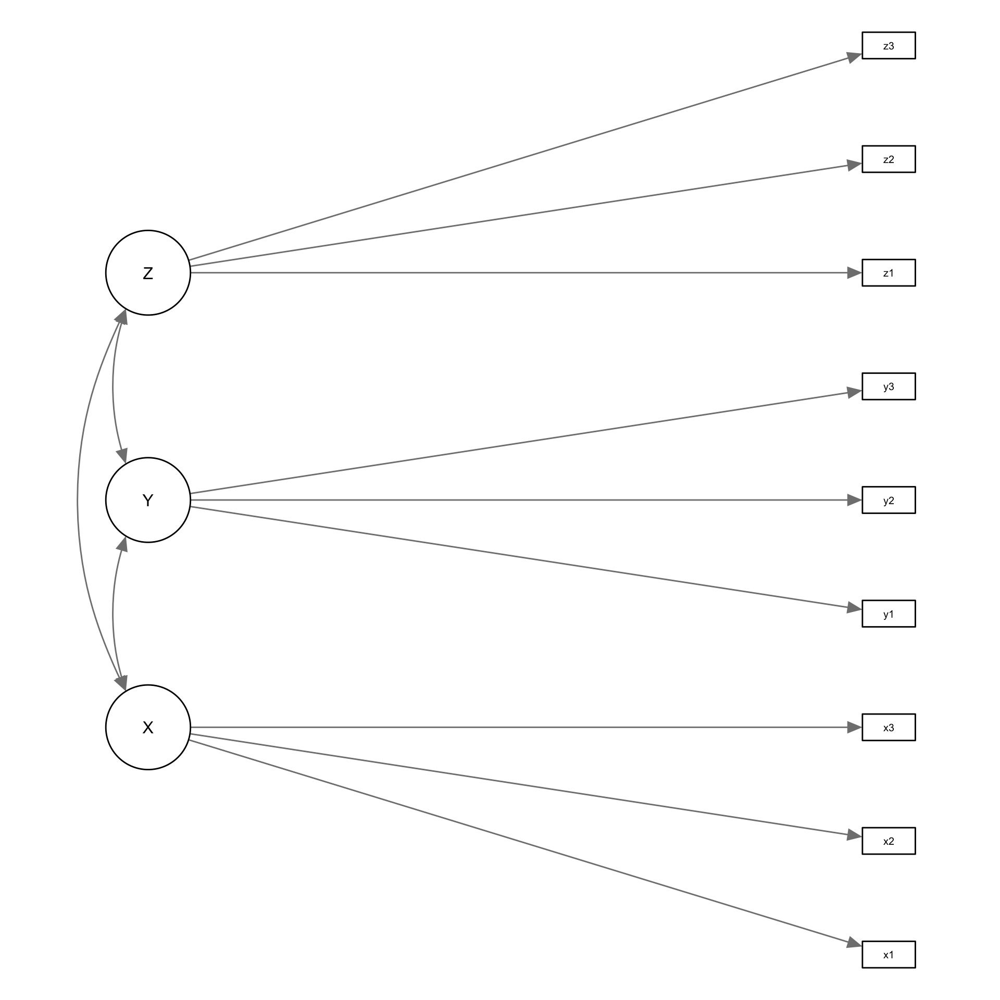
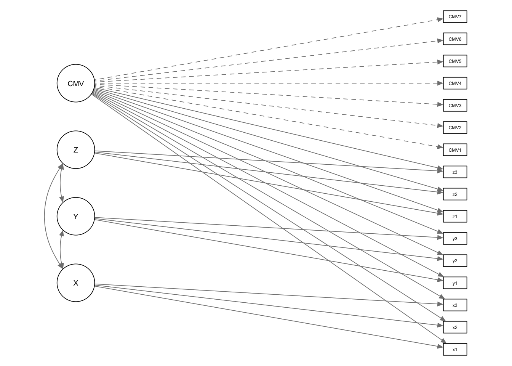

library(tidyverse)
library(furrr)
library(lavaan)
library(simstandard)
library(semPlot)
set.seed(1337)
plan("multicore") # when using parallel processing in furrr, use all cores
source("cmv_sim_functions.R", local = knitr::knit_global())Simple Gridded CVM Simulation
Simple CMV Simulation
In this document, we’ll do a simple CMV Simulation to show that our technique works. We’ll then use the same technique on our real data. We will also show how to do a gridded simulation with a range of CMV and other factor loadings.
Initialization
We will need the following projects:
- tidyverse: Data wrangling
- lavaan: SEM functionality
- simstandard: Does lavaan simulation properly (lavaan’s SimulateData() has problems) and provides some handy functions for working with SEM data in data frames
- semPlot: Plotting SEM diagrams
We’ll also set the random seed to an arbitrary fixed value to allow for reproduceability
Finally, we need several scripts in cmv_sim_functions.R
Model
Our model has three latent variables that are each measured with two or three items. Additionally, each item is measured using a 5-likert scale.
X
- x1
- x2
- x3
Y
- y1
- y2
- y3
Z
- z1
- z2
- z3
We’ll input the model in lavaan formula syntax and have it create an SEM diagram for us
cfa_model <- '
# measurement model
X =~ x1 + x2 + x3
Y =~ y1 + y2 + y3
Z =~ z1 + z2 + z3
# covariances
X ~~ Y
Y ~~ Z
X ~~ Z
'
semPlotModel_lavaanModel(cfa_model) |>
semPaths(layout="tree", rotation=2, nCharNodes=5, sizeMan2 = 2.5, mar = c(1,4,1,3), label.norm = "OOOOO", residuals = FALSE)
Simulation
To simulate, we need to set the parameter values. We’ll do this for each kind of parameter. Before we do that, though, we need to convert the model to a lavaan parameter table. We will also add the CMV marker variable (using a function in cmv_sim_functions.R)
cfa_model_pars <- lavaanify(cfa_model, std.lv = TRUE) |> add_cmv_marker()
semPlotModel_lavaanModel(cfa_model_pars) |>
semPaths(layout="tree", rotation=2, nCharNodes=5, sizeMan2 = 2.5, mar = c(1,4,1,3), label.norm = "OOOOO", residuals = FALSE)
parameters
We’ll create a parameter grid varying the CMV loadings from 0 to 1 and keeping the factor loadings constant at 0.8. We’ll put in a little bit of between factor covariance, but he covariance between the factors and the marker is set to 0.
loadings <- 0.9
cmv_loadings = seq(0.1, 0.2, by = 0.1)
covariances <- 0
cfa_model_pars <- cfa_model_pars |> fix_cmv_loadings(loadings, invert = TRUE) |> fix_covariances(covariances)
cfa_model_pars_list <- map(cmv_loadings, \(x) fix_cmv_loadings(cfa_model_pars, x)) # make a list of data frames with each frame having one of the CMV loadings
fits <- map(cfa_model_pars_list, \(x) { #TODO: change to future_map
cfa_sim <- sim_standardized(x, latent = FALSE, errors = FALSE, factor_scores = FALSE, composites = FALSE, matrices = FALSE) |>
# create likert scores using standard z scores for quintiles
mutate(across(everything(), \(y) findInterval(y, vec=c(-Inf, -1.2,-0.4, 0.4, 1.2,Inf))))
print(tibble(cfa_sim))
return(cfa(fixed2free(cfa_model_pars), cfa_sim))
}) Warning in lavaan::lavParTable(m, fixed.x = F): lavaan WARNING: input already
looks like a parameter table; returning as isWarning in sim_standardized_matrices(m, ...): Because the following relationship was not set, it is assumed to be 0:
X =~ x1Warning in lavaan::lavaanify(., fixed.x = FALSE): lavaan WARNING: input already
looks like a parameter table; returning as is# A tibble: 1,000 × 16
x1 x2 x3 y1 y2 y3 z1 z2 z3 CMV1 CMV2 CMV3 CMV4
<int> <int> <int> <int> <int> <int> <int> <int> <int> <int> <int> <int> <int>
1 4 3 3 5 3 5 5 5 5 2 4 1 3
2 3 2 2 3 3 5 2 2 1 3 5 4 2
3 2 1 1 4 3 4 4 4 4 2 3 4 2
4 1 2 3 3 4 3 5 5 4 1 4 3 2
5 4 4 5 3 4 3 2 3 3 2 5 1 3
6 2 2 3 4 3 3 2 3 3 2 3 2 2
7 4 5 4 4 5 5 5 5 5 1 2 3 3
8 3 2 3 1 1 1 2 3 2 5 1 2 4
9 4 3 3 5 5 4 3 2 3 5 5 2 4
10 4 4 4 2 3 3 3 3 2 4 3 4 2
# ℹ 990 more rows
# ℹ 3 more variables: CMV5 <int>, CMV6 <int>, CMV7 <int>Warning in lavaan::lavaanify(., fixed.x = FALSE): lavaan WARNING: input already
looks like a parameter table; returning as isWarning in lavaan::lavaan(model = fixed2free(cfa_model_pars), data = cfa_sim, : lavaan WARNING:
the optimizer warns that a solution has NOT been found!Warning in lavaan::lavParTable(m, fixed.x = F): lavaan WARNING: input already
looks like a parameter table; returning as isWarning in sim_standardized_matrices(m, ...): Because the following relationship was not set, it is assumed to be 0:
X =~ x1Warning in lavaan::lavaanify(., fixed.x = FALSE): lavaan WARNING: input already
looks like a parameter table; returning as is# A tibble: 1,000 × 16
x1 x2 x3 y1 y2 y3 z1 z2 z3 CMV1 CMV2 CMV3 CMV4
<int> <int> <int> <int> <int> <int> <int> <int> <int> <int> <int> <int> <int>
1 3 3 2 1 1 1 1 1 1 2 4 1 1
2 1 1 1 2 2 2 1 2 2 2 4 3 3
3 3 2 3 3 3 4 2 1 1 3 3 3 5
4 1 1 1 4 4 4 1 1 1 2 4 3 5
5 3 3 4 2 3 2 2 2 1 3 3 3 4
6 3 4 4 1 2 1 5 5 5 4 5 3 4
7 3 3 2 3 4 3 4 5 5 2 4 2 5
8 1 1 1 1 2 2 2 2 1 5 1 4 4
9 1 1 1 3 3 4 2 3 3 3 2 4 3
10 3 2 3 3 5 5 4 4 4 4 3 1 4
# ℹ 990 more rows
# ℹ 3 more variables: CMV5 <int>, CMV6 <int>, CMV7 <int>Warning in lavaan::lavaanify(., fixed.x = FALSE): lavaan WARNING: input already
looks like a parameter table; returning as isWarning in lav_model_vcov(lavmodel = lavmodel, lavsamplestats = lavsamplestats, : lavaan WARNING:
Could not compute standard errors! The information matrix could
not be inverted. This may be a symptom that the model is not
identified.#test <- do.call(lavTestLRT, fits)
#tibble(test)
#fit_measures <- map(fits, \(x) fitmeasures(x)) |>
# convert from list of measures to tibble
# map_dfr(~tibble(fit_measure = names(.x), value = .x), .id = "run")